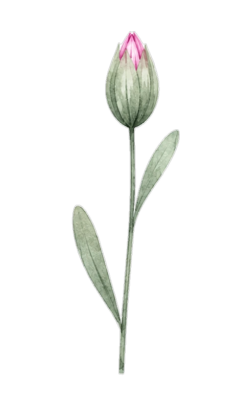
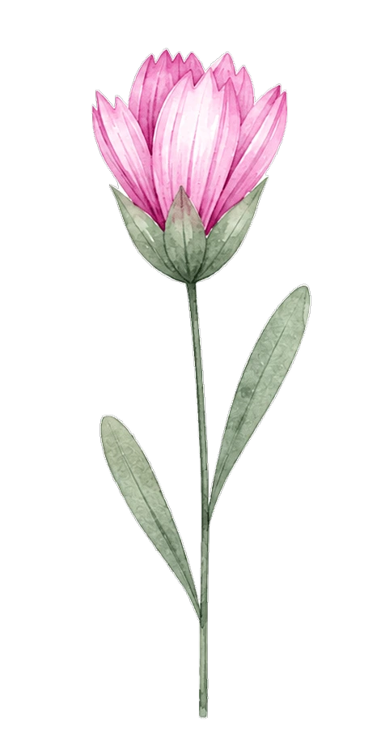
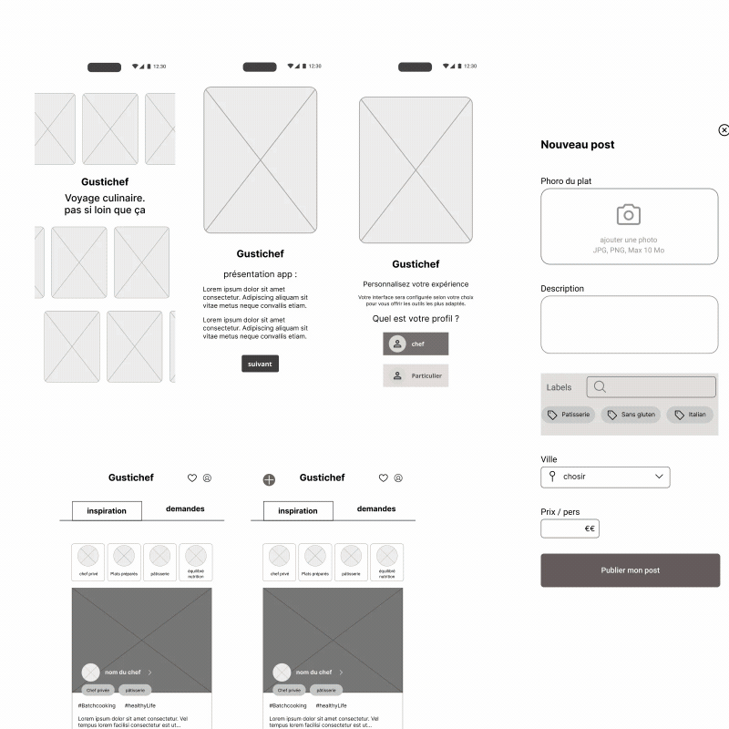
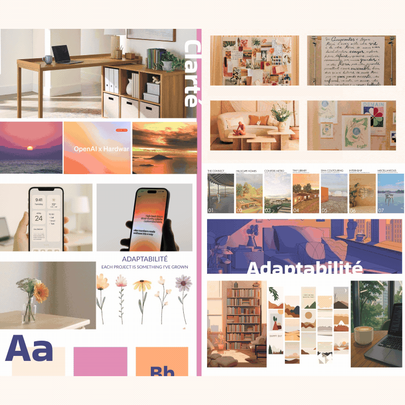

Je m'appelle Georgina, webdesigner et designer UX/UI basée en France.
Mon parcours international a façonné une vision du design où stratégie, sensibilité visuelle et simplicité se rencontrent pour créer des expériences digitales humaines et intuitives.
Aujourd'hui, je conçois des interfaces pensées à la fois pour les utilisateurs et les besoins du produit, en mêlant logique, créativité et attention au détail. J'aime créer des expériences claires, personnalisées et visuellement cohérentes, tout en restant attentive aux tendances et aux évolutions du design digital.


Ma façon de travailler
Chaque projet commence par l’écoute : comprendre les besoins utilisateurs, les objectifs du produit et le contexte du projet.
Après avoir une idée de ce que le client veut, je fais une veille du marché ou du domaine dans lequel je vais travailler. Le monde du webdesign évolue tous les jours
L'organisation fait partie de mon ADN. Avoir une structure et une hiérarchie claires, c'est la base d'une bonne conception
J’aime concevoir des interfaces modernes et personnalisées, où l’identité visuelle, les micro-interactions et les détails renforcent l’expérience utilisateur.
Mon approche combine logique, sens esthétique et veille constante des tendances digitales, creer des design scalaires et qui peuvent continuer à se developper dans le futur du projet.
Expérience professionnelle
Web designer en alternance
Fast Retailing
Comptoir de Cotonnier et Princess Tam
Tam
Stagiaire Web Designer
Les Martines
Chargée de communication (Service Civique)
Centre Socioculturel Simone Veil
Lille
Compétences
- Wireframing
- User flows
- Prototypage Design system
- Tests utilisateurs
- Architecture de l'information

- Direction artistique
- Responsive design
- Intégration web
- Motion & micro-interactions
